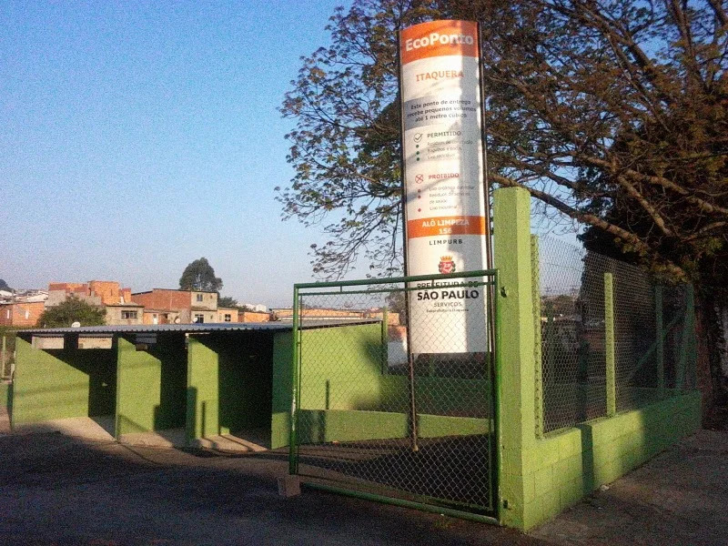
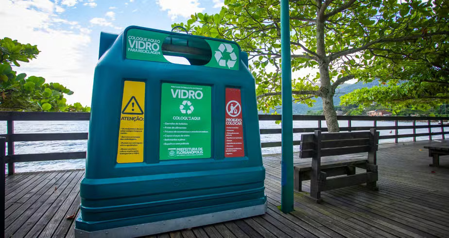
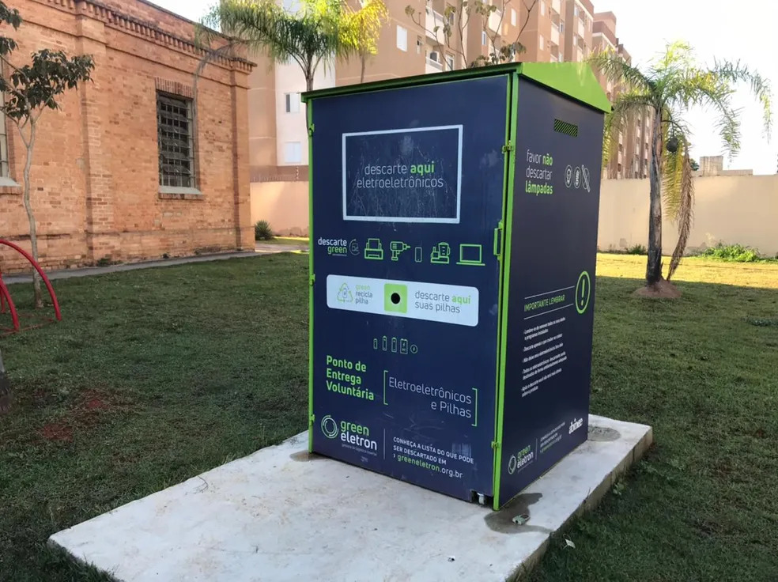

O que é AcheLixo
O AcheLixo é uma plataforma desenvolvida para facilitar o descarte correto de resíduos, reunindo informações sobre os pontos de coleta disponíveis e os tipos de materiais que cada local aceita.
Nosso objetivo é tornar essas informações mais acessíveis à população, incentivando práticas sustentáveis e contribuindo para um bairro mais limpo e consciente.
Mapa
Explore o mapa para localizar os pontos de coleta disponíveis na sua região e descobrir onde descartar seus resíduos corretamente.
Onde descartar cada tipo de resíduo?
Cada ponto de coleta possui uma finalidade específica. Conheça os principais locais de descarte e saiba onde levar seus resíduos para contribuir com a preservação do meio ambiente.

Ecopontos
Locais gratuitos destinados ao descarte de pequenos volumes de entulho de construção e reforma, madeira, restos de poda, móveis velhos, colchões e materiais recicláveis, como papelão, plástico, vidro e metal. Algumas unidades também recebem gesso.

PEVs — Pontos de Entrega Voluntária
São coletores destinados ao recebimento de materiais recicláveis secos, como papel, papelão, plástico, vidro e metal. Não devem ser utilizados para descartar resíduos orgânicos ou materiais que necessitem de coleta especializada.

Pontos de Coleta Específica
Alguns resíduos precisam de cuidados especiais para evitar riscos à saúde e ao meio ambiente. Pilhas, baterias, lâmpadas, pneus e aparelhos eletrônicos devem ser encaminhados aos pontos de logística reversa correspondentes. Medicamentos vencidos ou em desuso devem ser entregues em farmácias, drogarias ou unidades de saúde habilitadas. Já o óleo de cozinha usado deve ser levado a pontos que aceitem esse material.
Guia de materiais
Consulte como separar e descartar cada material. A cor de cada cartão indica o tipo de resíduo.
Creditos
Essa é a equipe da Wiztech, que criaram esse site.
Samuel Elvis Lima: fez a entrevista e o levantamento de requisitos
Gabriel Delatim Marcondes de Jesus: fez a modelagem das entidades
Mario Batista: fez a estrutura do HTML do site
Gabriel Ken Kudo Lima: fez a estilização utilizando CSS do site
Renato Luis Ferreira dos Santos: fez a interação com JavaScript do site